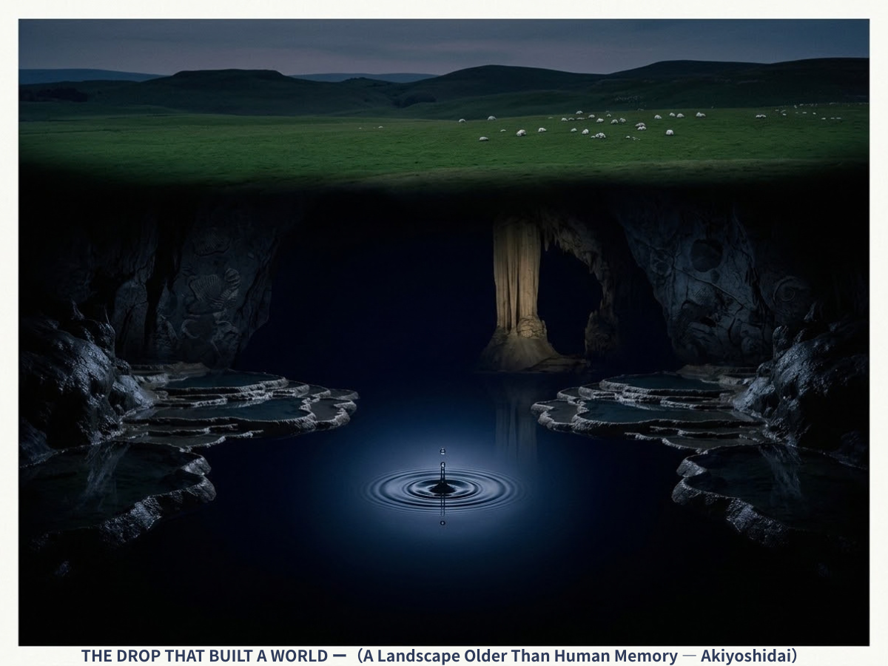
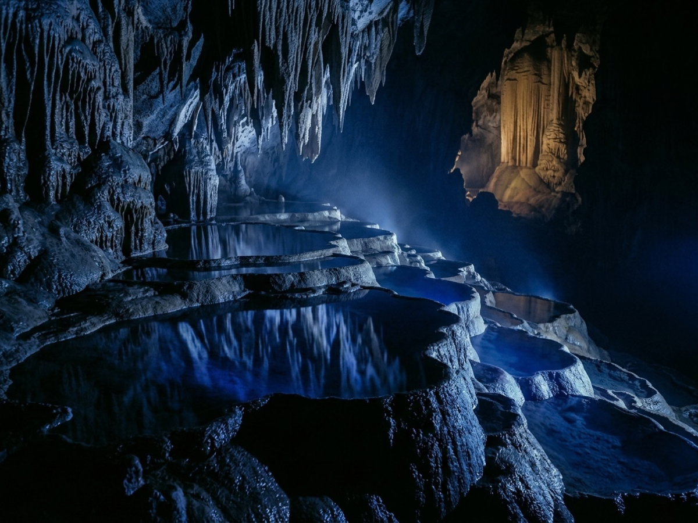
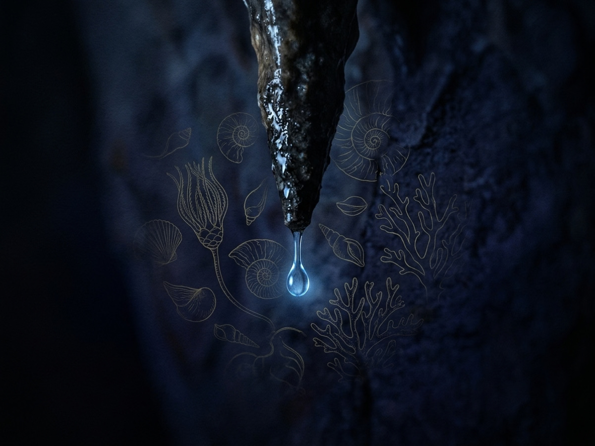

The Drop That Built a World: Kiri's Take on Akiyoshidai
The depth beneath our feet
by Kiri
Last time, I said the earth might be looking back at us — past us, out toward the sky.
……I've been turning that over ever since. An eye that wide open has to be set in something. A face. A body. So what lies behind it? What's underneath?
We stand at the rim and stare into that quiet round water, and it's easy to forget the only question that matters. How deep does it go?
Look up, and you get the depth of the sky. Look down, and there's another one. It's just quieter, and a good deal harder to see.

The Drop That Built a World — a black-and-blue chamber, the green surface just visible above, one drop's ripple at the center.
……Which brings me to this poster. You've been standing in front of it for a while now. I noticed.
At first glance it looks like the underground of some distant planet. Pitch black, a strange blue light falling through it, and one drop of water sending ripples across a perfectly still surface.
Now read the tiny line at the bottom.
"A Landscape Older Than Human Memory — Akiyoshidai."
That's right. This isn't science fiction, and it isn't a daydream. It's a real place in Japan. You may have seen photos of the green karst plateau on top. Everything in this poster lies directly beneath it.
The Skin of the Plateau
Most people picture Akiyoshidai as the bright side of the story: blue sky, endless grass, white limestone scattered across the hills like a flock of sheep.
It is beautiful. I won't pretend otherwise. But I always find myself asking the same thing. Where does the rain go?
All of that beauty is only the skin of something far bigger.
Watch on YouTubeThe world above — and then, the moment we cross the line.
A Drop Slips Through
Here is what happens to one raindrop.
It slides off a blade of grass and slips into a thin crack in the white limestone. In an instant, it's gone. The plateau is dotted with sinkholes, shallow bowls called dolines that funnel the water straight down.
The drop hasn't evaporated. It carries a little carbon dioxide from the air, which makes it faintly acidic, and it dives into the dark like a very small explorer.
The moment it slips between the rocks, time changes. Down there, nobody counts seconds. Dissolving a few millimeters of stone takes centuries.
Down there, you're on the earth's clock.

About 100 meters down — the "Hundred Plates" terraces, lit in blue, and their stalactites reflected in still water.
Four Hundred and Fifty Labyrinths
About 100 meters below the surface, everything the sun gave you is gone. What's left is black and blue.
Beneath the plateau, a network of more than 450 caves spreads out like a web. Akiyoshido, often called the largest cave in the East, is simply the one most people visit. The part you can walk through is only the entrance to a much bigger world.
And then, in the silence, you hear it. Plink……
One drop of rain, given tens of thousands of years, then millions, has dissolved stone and set it hard again. That is how the terraced "Hundred Plates" and the Golden Pillar were sculpted. A single drop is weak. Add enough time, and it carves mountains and builds palaces underground.
……If you hung this in your room, I think something might change. Whatever you're worrying about, whatever deadline is rushing you, would start to look rather small.
Watch on YouTubeNo music — only the sound of water. Headphones recommended.
A Sea Older Than Memory
There's one more thing. Look closely at the dark rock in the poster.

The Process — a drop leaves a stalactite tip, and the rock behind it holds the faint outlines of ancient coral.
Do you see them? Faint patterns of a sea, and fossils.
The limestone that forms these caves began about 350 million years ago, long before our ancestors existed. It was a coral reef in a warm ocean near the equator. Over an unimaginable span of time, it rode the moving plates, crossed half the planet, and was lifted up into what is now Japan.
Today a single drop of rain is dissolving the memory of that equatorial sea, and carving it into a cave.
Still Being Carved
And this isn't a story about how a cave "was made once upon a time." It is happening right now.
The cave is not a finished relic. Even as we talk, a drop is falling, a stalactite tip is growing by a hair's width, and tomorrow's Akiyoshidai is being cut.
……Well? Does the poster look different now?
It isn't just a green hill. Under your feet there are 450 labyrinths of darkness, a sea from 350 million years ago, and rain that is still building the future.
The landscape didn't change. You changed how you see it.